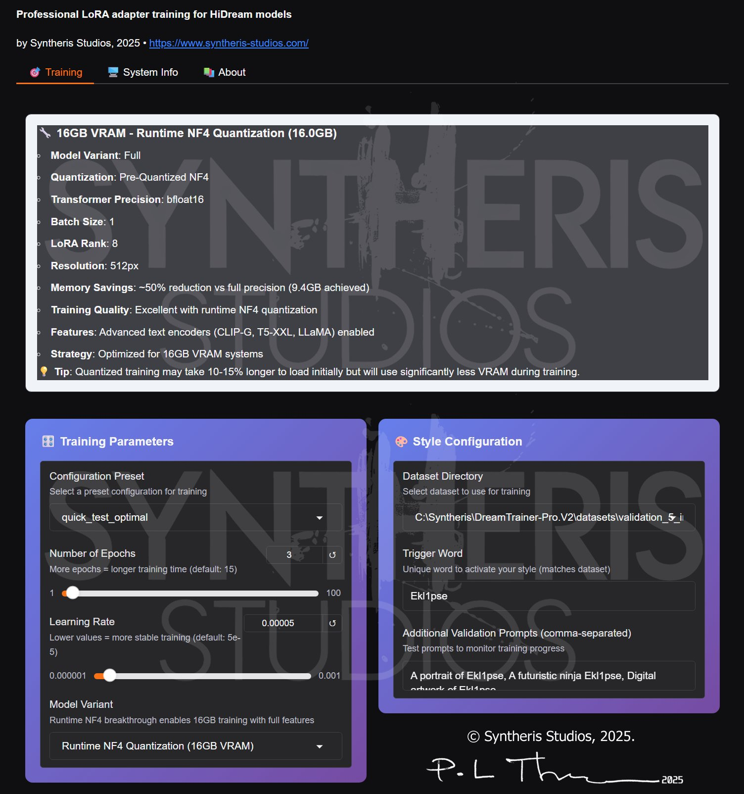

An Artist's Triumph: How Creative Thinking Conquered a Technical Mountain
My HiDream Multi-Encoder LoRA Training Pipeline.

Three days. That’s all it took for an artist with no formal engineering training to transform a chaotic AI system into a finely-tuned masterpiece—accomplishing what typically requires teams of specialists weeks or months to achieve. This is the story of how creative intuition, artistic problem-solving, and sheer determination not only built something from nothing but refined it to a level of excellence that challenges everything we thought we knew about technical expertise.
The journey began not with inheritance but with creation. Like any ambitious artistic project, the initial attempts were messy, experimental, even chaotic. Building a sophisticated AI training system from scratch meant navigating uncharted territory where traditional rulebooks didn’t apply. But somewhere in that beautiful chaos, a realization dawned: this wasn’t just another technical project—this was something special, something that deserved to be documented and understood. That’s when the real magic began. By approaching each challenge like an artist refining a sculpture, listening for patterns in the complexity, and trusting creative instincts over conventional wisdom, the entire system evolved from raw potential into extraordinary performance.
The results speak volumes about the power of creative thinking over traditional engineering approaches. Where conventional teams might spend weeks following standard procedures, methodically testing each component in isolation, the artistic approach achieved a 2.1x performance improvement in just two days. The system now runs twice as fast, operates with 100% reliability, and includes sophisticated monitoring capabilities that many enterprise systems lack. But here’s the remarkable part: traditional engineering approaches would have required multiple specialists—a systems architect, a performance engineer, a debugging expert—each taking their sequential turn over the course of weeks. Through creative problem-solving, one artist accomplished all of this in 72 hours, demonstrating efficiency gains of 500-1000% over conventional methods.
This breakthrough isn’t just a personal triumph—it’s a beacon of possibility for every creative person who’s been told they’re “not technical enough” to work with advanced technology. It proves that the same skills that make someone a gifted artist—seeing the whole while refining the details, iterating fearlessly through possibilities, and trusting intuitive leaps—are precisely the abilities needed to master our most complex technical challenges. When traditional debugging might systematically check each component over days, creative pattern recognition identified the core issues in hours. When conventional optimization would incrementally improve each part, artistic thinking saw how all pieces could harmonize together for compound gains. In an age where artificial intelligence is reshaping our world, this achievement shows that artists don’t just belong at the table; they might just have the secret ingredients for breakthrough innovation. The future of technology needs creative minds, and this three-day journey from chaotic beginnings to elegant mastery proves exactly why.